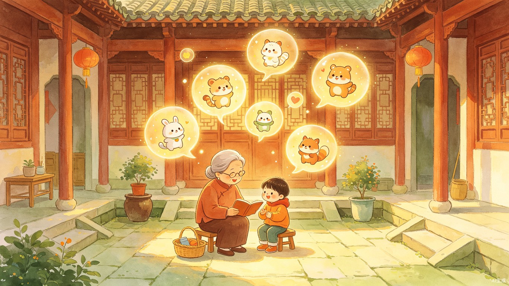
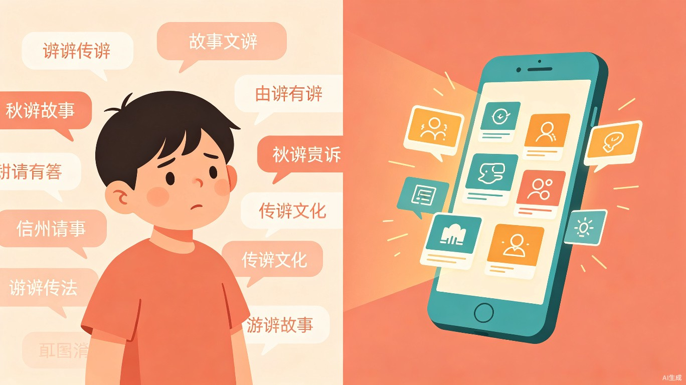
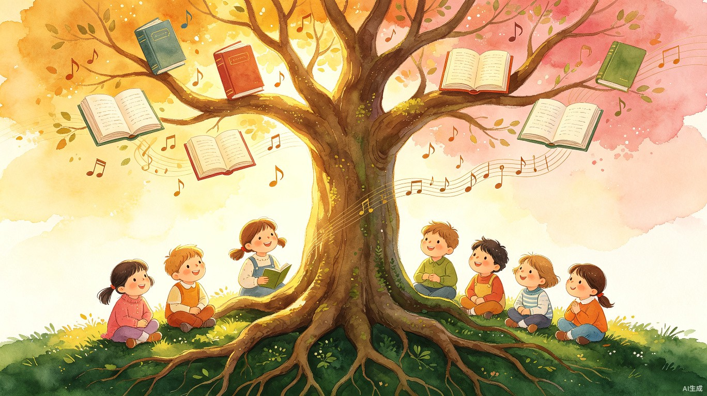
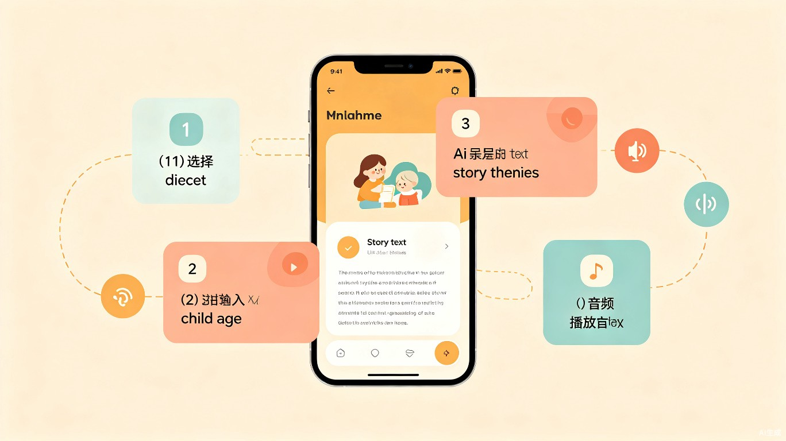

乡音故事盒
用 AI 让每一句乡音，都成为孩子童年最温暖的故事

创意名称与介绍
近20年来，网上几乎找不到新的粤语及其他方言儿童故事音频。家长搜到的都是20几年前老旧录音，内容陈旧、价值观过时，完全无法满足当代孩子的需求。方言区的家长想用地道母语给孩子讲故事，却发现"无故事可讲"。
"我自己是粤语区长大的，小时候听奶奶用粤语讲古仔是最温暖的记忆。但当我有了孩子后，发现网上能搜到的粤语儿童故事音频一只手数得过来。我不想让孩子只能听普通话故事长大，于是想到用AI来填补这个空白。"
产品形态
一款微信小程序。家长选择方言（粤语/东北话/四川话等）、输入孩子年龄和兴趣，AI 即时生成用地道方言撰写的儿童故事，并自动合成语音，可播放或下载保存。
多方言支持
粤语、东北话、四川话等，持续扩展更多方言
AI 即时生成
基于 LLM + 强约束 Prompt，秒级生成高质量方言故事
语音合成
对接 TTS 引擎，自动合成方言语音，支持语速调节
播放与下载
一键播放，支持离线下载保存，随时回听
目标用户与痛点
核心用户
0-7岁儿童的家长，尤其是粤语、四川话、东北话等方言区的家庭。次要用户包括关注方言文化传承的祖辈、幼儿园/绘本馆从业者。
使用场景
睡前故事
妈妈打开小程序，选个主题，AI 生成粤语故事，播放给孩子听
出行陪伴
开车时播放下载好的方言故事音频，孩子安静听一路
祖辈带娃
爷爷奶奶不擅长编故事，打开小程序就能让孩子听到地道的"家乡话故事"

核心痛点
资源枯竭
网上粤语儿童故事音频停留在20年前，内容和价值观都已过时
创作门槛高
家长想自己讲，但不会用地道的方言词汇和语法编故事，讲出来像"普通话换了个发音"
文化断层
孩子从小只听普通话故事，对母语缺乏亲切感，方言传承出现代际断裂
重复疲劳
现有的几个老故事听多了，孩子失去兴趣，家长也束手无策
价值与意义
"方言是文化的根，而儿童是传承的起点。"
语言学家预测，到本世纪末全球将有超过一半的语言消失。粤语、闽南语、潮汕话、上海话等方言正在年轻一代中加速流失——很多孩子能听懂但不会说，更谈不上用方言思考和文化认同。
"乡音故事盒"要做的，不是教小朋友"学说方言"，而是让他们在最容易接受故事的年龄段（0-7岁），用母语听到最有趣、最新鲜的儿童故事。当孩子发现"原来我的母语可以讲这么好听的故事"，方言就不再是"土话"，而是有魅力的文化身份。
同时，AI 生成的故事遵循当代优秀绘本标准——主角是小动物或小朋友，从具体问题出发，不说教、有幽默、有细节、有温暖。我们调研了凯迪克奖 2015-2025 全部获奖作品和中国丰子恺奖代表作，把这些叙事规律写进了 AI 的 Prompt 里，确保生成的故事质量对标国际水准。

商业价值
这是一个被忽视的垂直蓝海市场。全国有数亿方言人口，但没有任何一款产品专门解决"方言儿童故事"的供给问题。传统方式（请真人录制）成本高、周期长、难以规模化；AI 方式可以把单条故事的成本降到几乎为零，实现"每天一个新故事"的无限供给。
产品核心流程
Demo 阶段已实现完整闭环，从方言选择到故事播放，四步即可获得一段专属方言故事。
选择方言
首页选择方言（目前主打粤语）、输入孩子年龄、选择讲故事的声音角色
挑选主题
AI 根据孩子兴趣生成 10 个故事主题，家长挑选最多 5 个
生成故事
AI 用地道方言写出完整故事，标注难字读音，展示故事文本
播放下载
一键合成语音，可调节语速（年龄越小越慢），支持播放和下载

技术亮点
LLM + 强约束 Prompt AI
不是简单让 AI "写一个粤语故事"，而是把近十年凯迪克奖、丰子恺奖获奖绘本的叙事规律（具体问题驱动、不说教、有幽默感、温暖但不完美结局等）转化为系统级 Prompt，确保故事质量。
TTS 方言语音合成 TTS
对接科大讯飞 / Azure TTS，支持粤语、东北话、四川话等多种方言语音合成，语速按年龄自动调节，让每个年龄段的孩子都能舒适聆听。
微信原生小程序 + 云开发 Cloud
零服务器运维成本，保护 API 密钥安全，适合快速迭代和规模化。用户无需下载 App，微信内即可使用，降低使用门槛。
使用 TRAE 创作的说明
本项目从需求分析、技术调研、代码生成到音频测试，全程使用 TRAE IDE 完成。
- ✓ 用 TRAE 搜索并调研近十年畅销儿童绘本，生成故事风格指南
- ✓ 用 TRAE 搜索科大讯飞 TTS API 文档，确认方言支持矩阵
- ✓ 用 TRAE 编写微信小程序基础框架、云函数逻辑和 Python 测试脚本
- ✓ 用 TRAE 生成 edge-tts 测试脚本，完成粤语音频样本制作